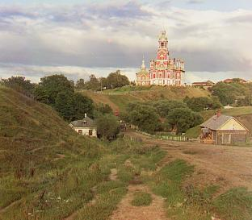

Sergei Mikhailovich Prokudin-Gorskii (1863-1944) was a Russian photographer and chemist renowned for his pioneering work in early color photography. He record three exposures of every scene onto a glass plate using a red, a green, and a blue filter. His extensive collection of photographs, preserved and digitized by institutions like the Library of Congress, provides a unique and valuable historical record of that era.
This project will put his theory into practice by synthesizing the original image through the red, green, and blue channels of the image. On the basis of exhaustive search, I used the search method of image pyramid and the technique of automatic white balance and edge detection to achieve faster search speed and higher image quality.
At first, I assumed that the pixel offset was [-15, 15], and found the best match between the red, green, and blue channels in this range. I used both MSE and NCC methods to calculate the matching score. Although both have good results, I believe NCC can match images more reasonably than MSE, because some images have pixels that are not similar in the three channels. For example, in emir.tif, the pixel value of clothes in the blue channel is larger, while the pixel value of clothes in the red channel is smaller. If you want to match the two, using MSE cannot well represent the degree of image matching because their pixel differences are significant. However, using NCC for absolute value calculation will not have such concerns. In the subsequent improvement work, I used NCC as my scoring function.
尽管穷举搜索在大部分时候都表现很好，但当通道的位移过大，搜索将耗费很长的时间。为了解决这一问题，我使用了图像金字塔的搜索方式。具体来说，将图像以二为比例缩放到合适的大小（例如小于40000像素），并在每个尺寸的对应位置周围上进行搜索，不断更新偏移量。在搜索之前，我裁剪掉了每个通道边缘的黑色像素，以免它们影响到匹配得分，最后在每个方向裁剪掉百分之十保持图像美观。在这一过程之后，大部分的图像已经能够成功匹配，除了emir.tif，接下来我将会使用一些改进方法让它匹配的更好。
在选择评分函数的过程中我意识到，在匹配的过程中应当关注像素的变化，而不是它们的值。我尝试了使用Prewitt Operator的自动边缘检测和使用图像梯度作为特征输入，它们都表现得很好，尤其在emir.tif上有明显的提升。Prewitt Operator指x和y两个方向上的卷积核，我使用它在图像上进行卷积操作，得到x和y两个方向上的边缘检测结果，计算它们的平方和作为像素的输入特征。
我将原始的RGB坐标变换到XYZ坐标，Y表示图像中一个像素的亮度。我寻找到整张图像的亮度最大的像素，假定这个像素为白色，并对整张图像RGB进行缩放。